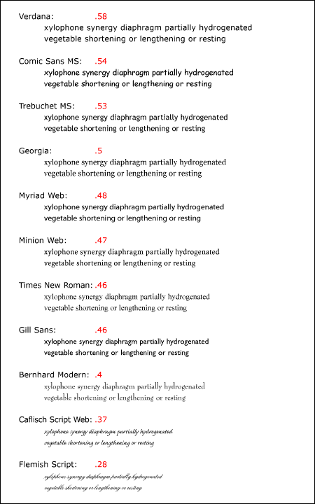
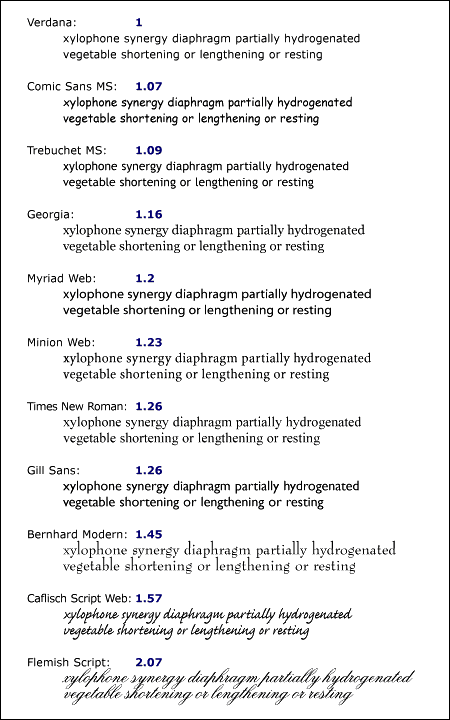
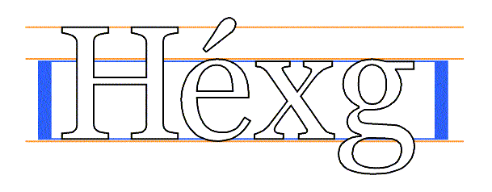
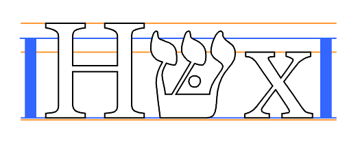
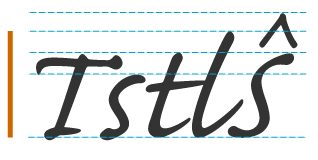
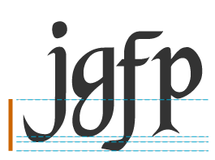

Содержание
Если текст документа отображается
визуально, символы (абстрактные
информационные элементы) обязаны
отображаться абстрактными глифами.
Один или более символов могут изображаться
одним или более абстрактными глифами в
доступном контекстно-зависимом стиле.
Глиф
- это фактическое художественное
представление абстрактного глифа в
некоторых типографских стилях в векторной
или растровой форме, которое может быть
прорисовано на экране или на бумаге.
Шрифт - это набор глифов,
соблюдающих один базовый мотив в
соответствии с дизайном, размером, внешним
видом и другими атрибутами,
ассоциированными со всем набором, и
отображение из символов в абстрактные
глифы.
Визуальный пользовательский агент (ПА) обязан рассматривать следующие вопросы, прежде чем отображать символы:
И в CSS1, и в CSS2 авторы специфицируют характеристики шрифта в серии свойств.
То, как ПА обрабатывают свойства, если нет совпадения шрифта на стороне клиента, было расширено в CS2 по сравнению с CSS1. В CSS1 принималось, что все шрифты представлены в клиентской системе и идентифицируются исключительно по имени. Альтернативные шрифты могли быть специфицированы через свойства, но в то же время у ПА не было способа предложить пользователю какие-либо другие шрифты (даже стилистически подобные шрифты, которые были доступны ПА), кроме общих шрифтов по умолчанию.
В CSS2 всё это изменилось, и теперь появилось больше свободы:
CSS2 улучшает подбор шрифтов на стороне клиента, делает возможным синтезирование шрифта и прогрессирующее отображение, а также загрузку шрифтов из Web. Это улучшает возможности 'WebFonts'.
В шрифтовой модели CSS2,
как и в CSS1, каждый ПА имеет в своём
распоряжении базу данных (БД) шрифтов.
CSS1 ссылалось на эту БД, но не предоставляло
детальной информации о том, что в БД
находится.
CSS2 определяет информацию в этой БД и
позволяет авторам таблиц стилей работать в
ней. При запросе на отображение символа
определённого шрифта, ПА сначала
идентифицирует тот шрифт БД, который "наиболее
соответствует" специфицированному шрифту (в
соответствии с алгоритмом
совпадения шрифтов). После идентификации
шрифта, ПА запрашивает данные шрифта
локально или из Web и может вывести символ с
использованием соответствующих глифов.
В соответствии с этой моделью мы организовали данную спецификацию по двум разделам. Первый касается механизма спецификации шрифта, посредством которого авторы специфицируют, какой шрифт они хотели бы использовать. Второй касается механизма выбора шрифта, посредством которого клиентский ПА идентифицирует и загружает шрифт, наиболее соответствующий спецификации автора.
То, как ПА конструирует базу шрифтов, находится вне поля зрения данной спецификации, поскольку реализация БД зависит от таких факторов, как операционная система, система окон и клиент.
Первая фаза механизма шрифтов CSS рассматривает, как авторы таблиц стилей специфицируют, какие шрифты должны использоваться ПА. Во-первых очевидно, что можно специфицировать шрифт по имени - строке, разделённой на части, например, "BT Swiss 721 Heavy Italic".
К сожалению, не существует
общепринятой хорошо проработанной и
универсальной системы классификации
шрифтов по их именам, и терминология,
применимая к именам одного семейства
шрифтов, может не подходить для
других. Например, термин 'italic' обычно
используется для обозначения наклонного
текста, но наклонный текст может также
обозначаться Oblique, Slanted, Incline, Cursive
или Kursiv.
Имена шрифтов обычно содержат термины,
описывающие "вес" шрифта. Главной задачей
этих имён является различение шрифтов
одного семейства по толщине. По этим именам
не существует общепринятых значений для
указания толщины, и использование этих
значений может очень различаться. Например,
утолщённый шрифт может описываться как Regular,
Roman, Book, Medium,
Semi- или Demi-Bold, Bold или Black, в
зависимости от того, насколько чёрным
является "нормальный" шрифт.
Этот недостаток систематизации имён делает невозможным, в общем случае, генерацию модифицированного имени шрифта, отличающегося определёнными признаками, такими как "жирность".
В связи с этим CSS использует другую модель. Шрифты запрашиваются не по имени, а по серии установленных свойств шрифта. Значения этих свойств формируют базис для механизма выбора шрифта в ПА. Свойства шрифта могут модифицироваться по отдельности, например, для увеличения толщины, и новый набор значений свойств шрифта используется затем для выбора из БД шрифтов. В результате повышается надёжность работы авторов и разработчиков таблиц стилей.
CSS2 специфицирует шрифты в соответствии со следующими характеристиками:
Для всех свойств, за исключением 'font-size', значения размеров 'em' и 'ex' относятся к размеру шрифта текущего элемента. Для 'font-size' эти единицы измерения ссылаются на размер шрифта-предка. См. также раздел единицы измерения.
Свойства шрифта в CSS
используются для описания желаемого вида
текста документа. Дескрипторы шрифта,
напротив, используются для описания
характеристик шрифта, чтобы мог быть выбран
походящий шрифт для создания нужного
представления.
О
классификации шрифтов см. раздел дескрипторы шрифта.
| Значение: | [[ <family-name> | <generic-family> ],]* [<family-name> | <generic-family>] | inherit |
| Начальное: | зависит от ПА |
| Применяется: | ко всем элементам |
| Наследуется: | да |
| Процентное: | N/A |
| Носитель: | визуальный |
Это свойство специфицирует приоритетный список имён семейств шрифтов и/или названий родовых семейств. Для решения проблем отсутствия в одном конкретном шрифте глифов для отображения всех символов документа или недоступности конкретных шрифтов в конкретной системе, данное свойство позволяет авторам специфицировать список шрифтов одного и того же стиля и размера, которые (шрифты) рассматриваются последовательно, чтобы определить, содержат ли они глиф конкретного символа. Это называется набор шрифтов.
Например, для отображения текста, содержащего смесь английских и математических символов, может потребоваться набор из двух шрифтов: один с латинскими символами и цифрами, другой - с математическими символами. Вот пример набора шрифтов, подходящих для отображения текста, содержащего латинские, японские и математические символы:
BODY { font-family: Baskerville, "Heisi Mincho W3", Symbol, serif }
Латинские символы будут взяты из шрифта "Baskerville", японские глифы - из "Heisi Mincho W3", а глифы математических символов - из "Symbol". Все другие будут браться из общего семейства шрифтов 'serif'.
Общие семейства шрифтов используются, если один или более шрифтов из набора шрифтов недоступны. Хотя во многих шрифтах есть глиф "отсутствующий символ", обычно это пустой квадрат, он как правило не выводится, если только это не последний шрифт набора шрифтов.
Есть два типа имён семейств шрифтов:
Авторам рекомендуется предлагать родовое семейство шрифтов в качестве последней альтернативы, для надёжности.
Например:
<!DOCTYPE HTML PUBLIC "-//W3C//DTD HTML 4.0//EN">
<HTML>
<HEAD>
<TITLE>Font test</TITLE>
<STYLE type="text/css">
BODY { font-family: "new century schoolbook", serif }
</STYLE>
</HEAD>
<BODY>
<H1 style="font-family: 'My own font', fantasy">Test</H1>
<P>What's up, Doc?
</BODY>
</HTML>
Обогащённый синтаксис выбора в CSS2 можно использовать для создания печати, чувствительной к языку. Например, некоторые китайские и японские символы унифицированы для того, чтобы использовать одну и ту же точку кода в Unicode, хотя абстрактные глифы - разные в этих двух языках.
*:lang(ja-jp) { font: 900 14pt/16pt "Heisei Mincho W9", serif }
*:lang(zh-tw) { font: 800 14pt/16.5pt "Li Sung", serif }
Здесь выбирается любой элемент соответствующего языка - японского или традиционного китайского - и запрашивается соответствующий шрифт.
| Значение: | normal | italic | oblique | inherit |
| Начальное: | normal |
| Применяется: | ко всем элементам |
| Наследуется: | да |
| Процентное: | N/A (не установлено) |
| Носитель: | визуальный |
Свойство 'font-style' запрашивает стили normal (иногда называемый "roman" или "upright"), italic и oblique в семействе шрифтов. Значения имеют следующий смысл:
В этом примере текст normal в элементах H1, H2 или H3 будет отображаться шрифтом italic. Однако, выделенный текст (EM) в элементе H1 будет выведен как normal.
H1, H2, H3 { font-style: italic }
H1 EM { font-style: normal }
| Значение: | normal | small-caps | inherit |
| Начальное: | normal |
| Применяется: | ко всем элементам |
| Наследуется: | да |
| Процентное: | N/A |
| Носитель: | визуальный |
В шрифтах малых заглавных букв глифы символов нижнего регистра походят на символы верхнего регистра, но меньшего размера и слегка других пропорций. Свойство 'font-variant' запрашивает двухкамерный шрифт (имеющий два регистра, как в латинице). Это свойство не имеет видимого эффекта для однокамерного написания (когда имеется только один регистр, как в большинстве систем написания). Значения имеют следующий смысл:
Результатом следующего примера будет элемент H3 с малыми заглавными буквами, с выделенными словами (EM) из наклонённых малых заглавных:
H3 { font-variant: small-caps }
EM { font-style: oblique }Поскольку это свойство переводит символы текста в верхний регистр, применяется тот же подход, что и в text-transform'.
| Значение: | normal | bold | bolder | lighter | 100 | 200 | 300 | 400 | 500 | 600 | 700 | 800 | 900 | inherit |
| Начальное: | normal |
| Применяется: | ко всем элементам |
| Наследуется: | да |
| Процентное: | N/A |
| Носитель: | визуальный |
Свойство 'font-weight' специфицирует вес шрифта. Значения имеют следующий смысл:
P { font-weight: normal } /* 400 */
H1 { font-weight: 700 } /* bold */
BODY { font-weight: 400 }
STRONG { font-weight: bolder } /* 500 возможно */
Дочерние элементы наследуют вычисленное значение веса.
| Значение: | normal | wider | narrower | ultra-condensed | extra-condensed | condensed | semi-condensed | semi-expanded | expanded | extra-expanded | ultra-expanded | inherit |
| Начальное: | normal |
| Применяется: | ко всем элементам |
| Наследуется: | да |
| Процентное: | N/A |
| Носитель: | визуальный |
Свойство 'font-stretch' выбирает стиль normal, condensed или extended из семейства. Абсолютные значения ключевых слов имеют следующий порядок, от самого узкого до самого широкого :
Относительное ключевое слово 'wider' устанавливает значение в следующее более "широкое" по сравнению с наследуемым значение (не выше 'ultra-expanded'); относительное ключевое слово 'narrower' устанавливает значение в следующее более "сжатое" значение ниже наследуемого значения (не ниже 'ultra-condensed').
| Значение: | <absolute-size> | <relative-size> | <length> | <percentage> | inherit |
| Начальное: | medium |
| Применяется: | ко всем элементам |
| Наследуется: | да, вычисленное значение наследуется |
| Процентное: | ссылается на размер шрифта родительского элемента |
| Носитель: | визуальный |
Это свойство описывает размер шрифта, установленного в solid. Значения имеют следующий смысл:
[ xx-small | x-small | small | medium | large | x-large | xx-large ]
На экране компьютера между смежными индексами применяется масштаб 1.2: если шрифт 'medium' - 12pt, то шрифт 'large' будет 14.4pt. Другие носители могут требовать других значений масштаба. Таким образом, ПА должен учитывать качество и доступность шрифтов при обсчёте таблицы размеров. Таблица может отличаться для разных семейств шрифтов.
Примечание. В CSS1 масштаб между смежными индексами принимался в 1.5 и, по опыту пользователей, оказался слишком большим.
[ larger | smaller ]
Например, если родительский элемент имеет размер шрифта 'medium', значение 'larger' сделает размер шрифта текущего элемента 'large'. Если размер родительского элемента не вмещается в диапазон таблицы, ПА свободен в интерполяции значений таблицы или округлении до ближайшего. ПАгенту может потребоваться экстраполировать значения таблицы, если цифровое значение находится вне ключевых слов.
Текущее значение данного свойства может отличаться от обсчитанного свойства при наличии цифрового значения 'font-size-adjust' и недоступности некоторых размеров шрифта.
Дочерние элементы наследуют обсчитанное значение 'font-size' (в то же время, эффект 'font-size-adjust' может усложниться).
P { font-size: 12pt; }
BLOCKQUOTE { font-size: larger }
EM { font-size: 150% }
EM { font-size: 1.5em }
| Значение: | <number> | none | inherit |
| Начальное: | none |
| Применяется: | ко всем элементам |
| Наследуется: | да |
| Процентное: | N/A |
| Носитель: | визуальный |
В двухкамерном написании субъективно очевидный размер и разборчивость шрифта меньше зависят от своих значений 'font-size', нежели от значений 'x-height', или, более доступно, от пропорции этих двух значений, называемой значением аспекта (font size, разделённый на x-height). Чем выше значение аспекта, тем более вероятно, что шрифт меньшего размера будет разборчивым. В противоположность этому, шрифты с меньшим значением аспекта скорее окажутся неразборчивыми ниже порогового значения, чем шрифты с более высоким значением аспекта. Прямая замена шрифтов в связи с размером шрифта может привести к появлению нечитаемых символов.
Например, популярный шрифт Verdana имеет значение аспекта 0.58; если измерение размера шрифта Verdana - 100 единиц, то его x-height - 58 единиц. Для сравнения, Times New Roman имеет значение аспекта 0.46. Verdana, следовательно, имеет тенденцию остаться разборчивым при меньших размерах, чем Times New Roman. И наоборот, Verdana чаще окажется слишком большим при замещении шрифта Times New Roman.
Это свойство позволяет авторам специфицировать значение аспекта, сохраняющее x-height первого шрифта в подставляемом шрифте. Значения имеют следующий смысл:
y(a/a') = c
где:
y = 'font-size' первого шрифта a' = значение аспекта доступного шрифта c = 'font-size' для применения к доступному шрифту
Например, если 14px Verdana (со значением аспекта 0.58) окажется недоступным, а доступный шрифта имеет значение аспекта 0.46, font-size замещающего будет 14 * (0.58/0.46) = 17.65px.
Уточнение размера шрифта имеет место при обсчёте текущего значения 'font-size'. Поскольку наследование базируется на обсчитанном значении, дочерние элементы будут наследовать неуточнённые значения.
Первый рисунок показывает различные типы шрифтов, растрированные в обычный размер (11pt. от 72 ppi), вместе с их значениями аспекта. Обратите внимание, что шрифты с большим значением аспекта оказываются больше, чем шрифты с низким значением аспекта. Шрифты со слишком низким значением аспекта оказываются нечитаемыми в данных размерах.

Следующий рисунок показывает результат 'font-size-adjust', где Verdana берётся как "первый шрифт", и результат применения масштаба. После применения, размеры шрифтов почти линеарны, хотя текущие (em) размеры варьируются более чем на 100%. Обратите внимание, что 'font-size-adjust' стремится также стабилизировать горизонтальное измерение строк.

| Значение: | [ [ <'font-style'> || <'font-variant'> || <'font-weight'> ]? <'font-size'> [ / <'line-height'> ]? <'font-family'> ] | caption | icon | menu | message-box | small-caption | status-bar | inherit |
| Начальное: | см. конкретные свойства |
| Применяется: | ко всем элементам |
| Наследуется: | да |
| Процентное: | допускается в 'font-size' и 'line-height' |
| Носитель: | визуальный |
Свойство 'font', за исключением случаев, описанных ниже, является сокращённым значением свойств установок 'font-style', 'font-variant', 'font-weight', 'font-size', 'line-height' и 'font-family' в том же месте таблицы стилей. Синтаксис этого свойства базируется на традиционной типографской нотации сокращений для установки нескольких свойств шрифта.
Все свойства, относящиеся к шрифтам, сначала устанавливаются в свои начальные значения, включая перечисленные в предыдущих параграфах, плюс 'font-stretch' и 'font-size-adjust'. Затем свойства, для которых заданы явные значения в 'font', устанавливаются в эти значения. Для определения допустимых и начальных значений см. ранее определённые свойства. Для обеспечения обратной совместимости нельзя устанавливать 'font-stretch' и 'font-size-adjust' в иные, нежели начальные, значения, используя свойство 'font'; вместо этого установите индивидуальные свойства.
P { font: 12pt/14pt sans-serif }
P { font: 80% sans-serif }
P { font: x-large/110% "new century schoolbook", serif }
P { font: bold italic large Palatino, serif }
P { font: normal small-caps 120%/120% fantasy }
P { font: oblique 12pt "Helvetica Nue", serif; font-stretch: condensed }
Во втором правиле процентное значение размера шрифта ('80%') относится к размеру шрифта родительского элемента. В третьем правиле высота строки в процентах ('110%') относится к размеру шрифта самого элемента.
Первые три правила не специфицируют 'font-variant' и 'font-weight' явно, поэтому эти свойства получают свои начальные значения ('normal'). Обратите внимание, что имя семейства шрифтов "new century schoolbook", содержащее пробелы, заключено в кавычки. Четвёртое правило устанавливает 'font-weight' в 'bold', 'font-style' - в 'italic' и неявно устанавливает 'font-variant' в 'normal'.
Пятое правило устанавливает 'font-variant' ('small-caps'), 'font-size' (120% размера шрифта предка), 'line-height' (120% размера шрифта) и 'font-family' ('fantasy'). Из этого следует, что ключевое слово 'normal' применяется к двум оставшимся свойствам: 'font-style' и 'font-weight'.
Шестое правило устанавливает 'font-style', 'font-size' и 'font-family', другие свойства шрифта в свои начальные значения. Оно затем устанавливает 'font-stretch' в 'condensed', поскольку это свойство не может быть установлено в это значение путём использования сокращённого свойства 'font'.
Следующие значения относятся к системным шрифтам:
Системные шрифты могут устанавливаться только полностью, то есть: семейство шрифта, размер, вес, стиль и т.д. - все устанавливаются одновременно. Эти значения могут быть затем установлены индивидуально, если это необходимо. Если шрифт с указанными характеристиками отсутствует на данной платформе, ПА или должен правильно заменить шрифт (напр., уменьшенная версия шрифта 'caption' может использоваться для шрифта 'smallcaption'), или подставить шрифт ПА по умолчанию. Как и для обычных шрифтов, если любые свойства системного шрифта не являются частью доступных операционной системе установок пользователя, то эти свойства должны быть установлены в свои начальные значения.
Это является причиной того, почему это свойство - "почти" сокращённое свойство: системные шрифты могут быть специфицированы только этим свойством, но не самим 'font-family', так что 'font' позволяет авторам сделать больше, чем вся сумма его подсвойств. В то же время, индивидуальные свойства, такие как 'font-weight', получают свои значения из системного шрифта, и (свойства) могут независимо варьироваться.
BUTTON { font: 300 italic 1.3em/1.7em "FB Armada", sans-serif }
BUTTON P { font: menu }
BUTTON P EM { font-weight: bolder }
Если шрифт для использования в выпадающих меню в конкретной системе установлен, к примеру, 9-пунктовый Charcoal с весом 600, тогда элементы P - потомки BUTTON будут отображаться так, как если бы действовало правило:
BUTTON P { font: 600 9pt Charcoal }
Поскольку сокращение 'font' устанавливает в начальное значение любое свойство, не получившее явно своего значения, это действие будет равносильно такому объявлению:
BUTTON P {
font-style: normal;
font-variant: normal;
font-weight: 600;
font-size: 9pt;
line-height: normal;
font-family: Charcoal
}
Общие семейства шрифтов являются компромиссным механизмом, служащим для сохранения целей некоторых авторов таблиц стилей в том (худшем) случае, когда ни один из специфицированных шрифтов не может быть выбран. Для оптимального типографского контроля в таблицах стилей нужно использовать особые именованные шрифты.
Все пять общих семейств шрифтов определены для использования во всех реализациях CSS (эти семейства не обязательно должны отображаться в пять различных шрифтов). ПА должны предоставлять осмысленный выбор по умолчанию для шрифтов общих семейств, которые (шрифты) отражают характеристики каждого семейства, допустимые в пределах основных технологий.
Рекомендуется, чтобы ПА позволяли пользователям сделать альтернативный выбор общих шрифтов.
Глифы шрифтов serif, в терминах CSS, имеют изгибы на концах, зауженные концы или засечки на концах (включая выгнутые засечки). Шрифты Serif обычно пропорциональны. Они обычно отображают бóльшие отличия между тонкими и толстыми штрихами, нежели шрифты общего семейства 'sans-serif'. CSS использует термин 'serif' для применения со шрифтом любого письма, хотя для некоторых видов письма могут применяться другие наименования, как Mincho (японский), Sung или Song (китайский), Totum или Kodig (корейский). Любой шрифт, описанный таким образом, может использоваться для представления общего семейства 'serif'.
Вот примеры шрифтов, удовлетворяющих этому описанию:
| Латинские шрифты | Times New Roman, Bodoni, Garamond, Minion Web, ITC Stone Serif, MS Georgia, Bitstream Cyberbit |
| Греческие | Bitstream Cyberbit |
| Кириллические | Adobe Minion Cyrillic, Excelcior Cyrillic Upright, Monotype Albion 70, Bitstream Cyberbit, ER Bukinst |
| Еврейские | New Peninim, Raanana, Bitstream Cyberbit |
| Японские | Ryumin Light-KL, Kyokasho ICA, Futo Min A101 |
| Арабские | Bitstream Cyberbit |
| Шрифты Чероки | Lo Cicero Cherokee |
Глифы шрифтов sans-serif, в терминах CSS, имеют закруглённые ровные окончания - без засечек и каких-либо других орнаментаций. Шрифты Sans-serif обычно пропорциональны. Они часто имеют отклонения между тонкими и толстыми закруглениями, сравнимые со шрифтами семейства 'serif'. CSS использует термин 'sans-serif' для применения со шрифтом любого письма, хотя для некоторых видов письма могут применяться другие наименования, как Gothic (японский), Kai (китайский) или Pathang (корейский). Любой шрифт, описанный таким образом, может использоваться для представления общего семейства 'sans-serif'.
Примеры шрифтов, удовлетворяющих этому описанию:
| Латинские шрифты | MS Trebuchet, ITC Avant Garde Gothic, MS Arial, MS Verdana, Univers, Futura, ITC Stone Sans, Gill Sans, Akzidenz Grotesk, Helvetica |
| Греческие | Attika, Typiko New Era, MS Tahoma, Monotype Gill Sans 571, Helvetica Greek |
| Кириллические | Helvetica Cyrillic, ER Univers, Lucida Sans Unicode, Bastion |
| Еврейские | Arial Hebrew, MS Tahoma |
| Японские | Shin Go, Heisei Kaku Gothic W5 |
| Арабские | MS Tahoma |
Глифы шрифтов cursive, в терминах CSS, обычно имеют связывающие окончания или другие курсивные характеристики типа italic. Глифы частично или полностью соединяются, и результат больше напоминает письмо от руки или кистью, чем типографскую печать. Шрифты для некоторых видов письма, таких как арабское, почти всегда курсивные. CSS использует термин 'cursive' для шрифтов любого письма, хотя другие имена - Chancery, Brush, Swing и Script также употребляются.
Примеры таких шрифтов:
| Латинские | Caflisch Script, Adobe Poetica, Sanvito, Ex Ponto, Snell Roundhand, Zapf-Chancery |
| Кириллические | ER Architekt |
| Еврейские | Corsiva |
| Арабские | DecoType Naskh, Monotype Urdu 507 |
Фантазийные шрифты, как они используются
в CSS, прежде всего декоративны, а уже
потом содержат представление символов (в
противоположность шрифтам Pi или Picture, не
представляющим символы).
Примеры:
| Латинские шрифты | Alpha Geometrique, Critter, Cottonwood, FB Reactor, Studz |
Единственным критерием для моноширинных
шрифтов служит то, что все глифы имеют одну
и ту же фиксированную ширину. (Некоторые
виды письма, такие как арабское, выглядят
при этом необычно). Вид напоминает шрифт
пишущей машинки, и это часто
используется для выделения образцов
компьютерного кода. Примеры моноширинных
шрифтов:
| Латинские | Courier, MS Courier New, Prestige, Everson Mono |
| Греческие | MS Courier New, Everson Mono |
| Кириллические | ER Kurier, Everson Mono |
| Японские | Osaka Monospaced |
| Чероки | Everson Mono |
Вторая фаза механизма шрифтов CSS2 - выбор в ПА шрифта на базе специфицированных автором свойств шрифта, доступных шрифтов и т.д. Детали алгоритма подбора шрифта рассматриваются ниже.
Имеется четыре возможных действия при выборе шрифта: совпадение имени, смысловое совпадение, синтез и загрузка.
Отображение по частям комбинирует загрузку и один из других методов; при этом предоставляется временный замещающий шрифт (используется совпадение имени, смысловое совпадение или синтез), чтобы дать возможность читать содержимое, пока происходит загрузка шрифта. Как только нужный шрифт загружен, он замещает временный шрифт.
Примечание. Отображение по частям требует наличия метрической информации о шрифте для того, чтобы исключить перерисовку содержимого после загрузки и вывода основного шрифта. Эта метрическая информация достаточно содержательна, чтобы её можно было специфицировать для шрифта документа не более одного раза.
Описание шрифта является мостом между авторской спецификацией шрифта и данными шрифта, которые представляют собой данные, необходимые для форматирования текста и для представления абстрактных глифов, для которых карта символов в действительности является упорядоченным контуром или растром. Шрифты имеют ссылку из свойств таблицы стилей.
Описания шрифтов добавляются к БД шрифтов и используются затем для выбора соответствующих данных шрифта. Описание шрифта содержит дескрипторы, такие как размещение данных шрифта в Web, и описание этих данных шрифта. Дескрипторы шрифта необходимы также при выборе свойств шрифта из таблицы стилей для определённых данных шрифта. Степень детализации описания шрифта может варьироваться от имени шрифта до списка ширины глифов.
Дескрипторы шрифта можно классифицировать по трём типам:
Все описания шрифта специфицируются at-правилом
@font-face.
Общая форма такая:
@font-face { <font-description> }
где <font-description> имеет форму:
дескриптор: значение; дескриптор: значение; [...] дескриптор: значение;
Одно правило @font-face специфицирует значение для одного дескриптора шрифта, явно или неявно. Дескрипторы, не получившие явных значений в правиле, берут их из списка для каждого дескриптора в этой спецификации. Эти дескрипторы применяются только в контексте того правила @font-face, в котором они определены, и не применяются к элементам языка документа. Таким образом, отсутствует указание на то, для каких элементов применяются дескрипторы, или на то, наследуются ли значения дочерними элементами.
Доступные дескрипторы шрифта описываются далее в разделах этой спецификации.
Например, это шрифт 'Robson Celtic', определённый и имеющий ссылку в таблице стилей, содержащейся в документе HTML:
<!DOCTYPE HTML PUBLIC "-//W3C//DTD HTML 4.0//EN">
<HTML>
<HEAD>
<TITLE>Font test</TITLE>
<STYLE TYPE="text/css" MEDIA="screen, print">
@font-face {
font-family: "Robson Celtic";
src: url("http://site/fonts/rob-celt")
}
H1 { font-family: "Robson Celtic", serif }
</STYLE>
</HEAD>
<BODY>
<H1> Этот заголовок выводится с использованием Robson Celtic</H1>
</BODY>
</HTML>
Таблица стилей (в элементе STYLE) содержит правило CSS, устанавливающее все элементы H1 на использование семейства шрифтов 'Robson Celtic'.
Реализация CSS1 будет искать у клиента шрифт, чьи имя семейства и другие свойства совпадают с 'Robson Celtic', и, если совпадение не будет найдено, будет использоваться специфичный для данного ПА резервный шрифт serif (который должен существовать).
ПА, реализующий CSS2, сначала проверяет правила @font-face для поиска описания шрифта, определённого как 'Robson Celtic'. Данный пример содержит подходящее правило. Хотя в этом правиле и не содержится много данных шрифта, в нём есть URI, где можно запросить шрифт для представления данного документа. Загруженные шрифты не должны становиться доступными для других приложений. Если не найдено совпадение для @font-face, ПА попытается выполнить сравнение как ПА с CSS1.
Обратите внимание, что, если шрифт 'Robson Celtic' был установлен на клиентской системе, это может вызвать добавление пользовательским агентом входа в БД шрифтов для установленной копии, как описано в разделе алгоритм совпадения шрифта. Установленная копия получит совпадение до загружаемого шрифта (в предыдущем примере).
Реализации CSS1, не понимающие правило @font-face, вычислят открывающую фигурную скобку и будут игнорировать всё до появления закрывающей скобки. Это at-правило соответствует требованию вперёд-совместимого разбора CSS. Разборщики могут игнорировать эти правила без возникновения ошибки.
Разделение
дескрипторов шрифта и данных шрифта даёт
возможность выполнит выбор и/или замену
шрифта. Защита данных и ограничения
репликации для дескрипторов шрифта могут
быть менее жёсткими, чем для полных данных
шрифта.
Таким образом, возможно установить
определение шрифта локально или как
минимум иметь его в локальном кэше, если он
появляется в обычно используемой таблице
стилей; это может не потребовать доступа к
полному определению шрифта в Web больше, чем
однократно, для именованного шрифта.
Если дескриптор шрифта дублируется, последний появившийся дескриптор используется, а остальное должно игнорироваться.
Также любые дескрипторы, которые не распознаются или не используются ПА, должны игнорироваться. Последующие версии CSS могут предоставить дополнительные дескрипторы для лучшего подбора, замены или синтеза шрифта.
Следующие дескрипторы имеют те же имена, что и соответствующие свойства шрифта CSS2, и принимают одиночное значение или список разделённых запятыми значений.
Значения в таком списке (за исключением особо отмеченных) - те же самые, что и соответствующие свойства CSS2. Если это одиночное значение, оно должно совпадать. Если это список, любой элемент списка может образовать совпадение. Если в @font-face дескриптор отсутствует, используется начальное значение дескриптора.
| Значение: | [ <family-name> | <generic-family> ] [, [<family-name> | <generic-family> ]]* |
| Начальное: | зависит от ПА |
| Носитель: | визуальный |
Это дескриптор имени семейства шрифтов для шрифта, принимающий то же значение, что и свойство 'font-family'.
| Значение: | all | [ normal | italic | oblique ] [, [normal | italic | oblique] ]* |
| Начальное: | all |
| Носитель: | визуальный |
Это дескриптор стиля шрифта, принимающий то же значение, что и свойство 'font-style', за исключением того, что использование списка запрещено.
| Значение: | [normal | small-caps] [,[normal | small-caps]]* |
| Начальное: | normal |
| Носитель: | визуальный |
Это CSS-обозначение того, является ли этот шрифт вариантом "малые заглавные". Он принимает те же значения, что и свойство 'font-variant', за исключением того, что использование списка запрещено.
Примечание. Кириллические прямые шрифты могут быть помечены в 'font-variant' как "малые заглавные", что лучше совмещается с латиницей (а соответствующий курсив - помечен 'font-style' как italic с той же целью).
| Значение: | all | [normal | bold | 100 | 200 | 300 | 400 | 500 | 600 | 700 | 800 | 900] [, [normal | bold | 100 | 200 | 300 | 400 | 500 | 600 | 700 | 800 | 900]]* |
| Начальное: | all |
| Носитель: | визуальный |
Это дескриптор веса шрифта относительно других шрифтов того же семейства. Принимает те же значения, что и свойство 'font-weight', с тремя исключениями:
| Значение: | all | [ normal | ultra-condensed | extra-condensed | condensed | semi-condensed | semi-expanded | expanded | extra-expanded | ultra-expanded ] [, [ normal | ultra-condensed | extra-condensed | condensed | semi-condensed | semi-expanded | expanded | extra-expanded | ultra-expanded] ]* |
| Начальное: | normal |
| Носитель: | визуальный |
Это обозначение CSS для сжатия или расширения шрифта относительно других шрифтов того же семейства. Принимает те же значения, что и свойство 'font-stretch', за исключением того, что:
| Значение: | all | <length> [, <length>]* |
| Начальное: | all |
| Носитель: | визуальный |
Это дескриптор размера, предоставляемого для данного шрифта. Разрешены только абсолютные единицы измерения, в отличие от свойства 'font-size', которое разрешает относительные и абсолютные размеры. Разрешён список разделённых запятыми размеров.
Начальное значение 'all' подходит для большинства имеющих вес шрифтов, поэтому данный дескриптор используется прежде всего в @font-face для растровых шрифтов или шрифтов, имеющих вес, которые разработаны для растрирования в ограниченных пределах размеров шрифта.
Следующий дескриптор не обязателен внутри определения шрифта, но используется для того, чтобы избежать проверки или загрузки шрифта, который не имеет достаточного количества глифов для вывода определённого символа.
| Значение: | <urange> [, <urange>]* |
| Начальное: | U+0-7FFFFFFF |
| Носитель: | визуальный |
Это дескриптор диапазона символов ISO 10646, покрываемого данным шрифтом.
Значения <urange> выражаются с использованием 16-ричных значений с префиксом "U+", соответствующих кодовой позиции в ISO 10646 ([ISO10646]).
Например, U+05D1 это символ ISO 10646 'еврейская буква bet'. Для значений вне Basic Multilingual Plane/BMP (Базовый Многоязычный План) подставляются дополнительные ведущие цифры, соответствующие числу плана, и также 16-ричные, как этот U+A1234 символ Плана 10 с 16-ричной кодовой позицией 1234. Со времени написания, новые символы вне BMP не добавлялись. Ведущие нули (например, 0000004D) верны, но не требуются.
Начальное значение этого дескриптора покрывает не только весь Basic Multilingual Plane (BMP), в пределах U+0-FFFF, но также и весь репертуар ISO 10646. Таким образом, начальное значение говорит о том, что шрифт может содержать глифы любых символов ISO 10646. Спецификация значения 'unicode-range' предоставляет информацию для эффективного поиска, объявляя ограниченный диапазон, в пределах которого шрифт может иметь глифы символов. Шрифт не должен искаться вне указанного диапазона символов.
Значения могут записываться любым количеством цифр. Для единичной цифры символ '?' означает 'любое значение', которое создаёт диапазон позиций символов. Таким образом, используя одиночное число:
Пара чисел в данном формате в комбинации с дефисом обозначает более широкий диапазон. Например:
Множественные конечные диапазоны могут быть специфицированы путём разделения запятыми. Как и в других списках CSS с разделением запятыми, любой пробел перед или после запятой игнорируется. Например:
Более понятное представление типичного китайского шрифта:
unicode-range: U+3000-33FF, U+4E00-9FFF
Этот дескриптор определяет количество "units/единиц измерения" на em; эти units могут использоваться другими дескрипторами для выражения различных размеров, следовательно, 'units-per-em' необходим, если другие дескрипторы зависят от него.
| Значение: | <number> |
| Начальное: | не определено |
| Носитель: | визуальный |
Это дескриптор единиц измерения для координат прямоугольника em, размера решётки дизайна, на которую накладываются глифы.
Необходим для ссылки на данные шрифта, загружаемые или установленные локально.
| Значение: | [ <uri> [format(<string> [, <string>]*)] | <font-face-name> ] [, <uri> [format(<string> [, <string>]*)] | <font-face-name> ]* |
| Начальное: | не определено |
| Носитель: | визуальный |
Это выстроенный по приоритету список разделённых запятыми внешних ссылок и/или имён локально установленных файлов. Внешняя ссылка указывает на данные шрифта в Web. Это необходимо, если WebFont загружен. Ресурс шрифта может быть поднабором шрифта-источника, например, он может содержать только те глифы, которые необходимы для текущей страницы или для набора страниц.
Внешняя ссылка состоит из URI, за которым может идти подсказка, касающаяся формата ресурса шрифта, найденного по данному URI, и эта информация должна использоваться клиентами для исключения перехода по ссылкам на те шрифты, которые невозможно использовать. Как и с любой другой гипертекстовой ссылкой, возможны и другие форматы, но для клиента будет надёжнее идти этим путём, нежели пытаться разобрать расширения имён файлов в URI.
Форматирующая подсказка содержит список разделённых запятыми строк формата, обозначающих хорошо известные форматы шрифтов. ПА распознает имя форматов шрифта, поддерживаемых им, и не будет загружать шрифты, которые он не смог распознать.
Начальный список строк формата, определённый в данной спецификации и представляющий форматы, которые наиболее вероятны для использования на различных платформах:
| Строка | Формат Шрифта | Примеры типичных расширений |
|---|---|---|
| "truedoc-pfr" | TrueDoc™ Portable Font Resource | .pfr |
| "embedded-opentype" | Embedded OpenType | .eot |
| "type-1" | PostScript™ Type 1 | .pfb, .pfa |
| "truetype" | TrueType | .ttf |
| "opentype" | OpenType, включая TrueType Open | .ttf |
| "truetype-gx" | TrueType с расширениями GX | |
| "speedo" | Speedo | |
| "intellifont" | Intellifont |
Как и с прочими URI в CSS, URI может быть неполным, и в этом случае он расширяется относительно расположения таблицы стилей, содержащей @font-face.
Установленное локально <font-face-name> это полное имя локально установленного шрифта. Full font name\полное имя шрифта - это имя шрифта, сообщённое операционной системой, и оно наиболее вероятно будет использоваться читающим таблицами стилей, таблицей стилей по умолчанию в браузере или возможными авторским таблицами стилей в intranet. Украшения, такие как bold, italic и underline, часто используются для дифференциации шрифтов внутри семейства шрифтов. Дополнительную информацию о полных именах шрифтов см. далее в Примечаниях.
Обозначением для <font-face-name> является полное имя шрифта, которое должно быть заключено в кавычки, поскольку может содержать любые символы, включая пробелы и знаки пунктуации, а также должно быть заключено в local(" и ").
Доступ к локально установленным шрифтам происходит через <font-face-name>. Font face name (имя разновидности шрифта) не должно быть ни уникальным, ни независимым от формата платформы и шрифта, но в настоящее время это наилучший путь идентификации данных локально установленного шрифта. Использование имени разновидности шрифта (font face name) можно осуществить более точно путём предоставления указания на требуемое дополнение глифа. Это можно сделать, указав диапазон позиций символов ISO 10646, для которых шрифт предоставляет некоторые глифы (см. 'unicode-range').
Эти дескрипторы не обязательны для определения CSS2, но могут использоваться при смысловой подстановке шрифтов или уточнении размеров шрифтов, необходимых автору.
| Значение: | [<integer>]{10} |
| Начальное: | 0 0 0 0 0 0 0 0 0 0 |
| Носитель: | визуальный |
Это дескриптор числа Panose -1, состоящего из десяти десятеричных чисел, разделённых пробелами. Список значений, разделённых запятыми, не допускается для данного дескриптора, поскольку система Panose -1 может указывать, что диапазоны значений совпадают. Начальное значение - нуль, что означает "любое" для любой цифры PANOSE; все шрифты будут совпадать с числом Panose, если используется это значение. Использование дескриптора Panose -1 рекомендуется исключительно для латинских шрифтов. Дополнительно см. Приложение C.
| Значение: | <number> |
| Начальное: | не определено |
| Носитель: | визуальный |
Это дескриптор ширины вертикальной основы шрифта. Если значение не определено, дескриптор не используется для подбора. Если этот дескриптор используется, также должен использоваться дескриптор 'units-per-em'.
| Значение: | <number> |
| Начальное: | не определено |
| Носитель: | визуальный |
Это дескриптор ширины горизонтальной основы шрифта. Если значение не определено, дескриптор не используется для подбора. Если этот дескриптор используется, также должен использоваться дескриптор 'units-per-em'.
| Значение: | <number> |
| Начальное: | 0 |
| Носитель: | визуальный |
Это дескриптор угла вертикального закругления шрифта.
| Значение: | <number> |
| Начальное: | не определено |
| Носитель: | визуальный |
Это дескриптор для числа-значения высоты глифов верхнего регистра шрифта. Если значение не определено, дескриптор не используется для подбора. Если этот дескриптор используется, также должен использоваться дескриптор 'units-per-em'.
| Значение: | <number> |
| Начальное: | не определено |
| Носитель: | визуальный |
Это дескриптор высоты глифов нижнего регистра шрифта. Если значение не определено, дескриптор не используется для подбора. Если этот дескриптор используется, также должен использоваться дескриптор 'units-per-em'. Этот дескриптор может широко использоваться вместе со свойством 'font-size-adjust', поскольку вычисление значения z шрифтов-кандидатов требует наличия и font size, и x-height; следовательно, рекомендуется включать данный дескриптор.
| Значение: | <number> |
| Начальное: | не определено |
| Носитель: | визуальный |
Это дескриптор максимальной неакцентированной высоты шрифта. Если значение не определено, дескриптор не используется для подбора. Если этот дескриптор используется, также должен использоваться дескриптор 'units-per-em'.
| Значение: | <number> |
| Начальное: | не определено |
| Носитель: | визуальный |
Это дескриптор максимальной неакцентированной глубины шрифта. Если значение не определено, дескриптор не используется для подбора. Если этот дескриптор используется, также должен использоваться дескриптор 'units-per-em'.
Синтезирование шрифта предполагает, как минимум, совпадение размеров ширины специфицированного шрифта. Следовательно, для синтеза данная метрическая информация должна быть доступна. Таким же образом и для прогрессивного представления необходимо наличие метрической информации о ширине, чтобы исключить перерисовку содержимого при загрузке основного шрифта. Хотя следующие дескрипторы не обязательны для определения CSS2, некоторые необходимы для синтезирования (или прогрессивного отображения без перерисовки), если этого хочет автор. Как только основной шрифт становится доступен, подставленный шрифт должен быть заменён. Любые из этих дескрипторов, если представлены, дают лучшее или более быстрое получение предполагаемого шрифта.
Самыми важными из этих дескрипторов являются 'widths' и 'bbox', которые используются для предотвращения перерисовки текста при получении доступа к основному шрифту. В дополнение к этому, дескрипторы из набора дескрипторов, используемых для подбора, могут использоваться для лучшего синтеза внешнего вида основного шрифта.
| Значение: | [<urange> ]? [<number> ]+ [,[<urange> ]? <number> ]+] |
| Начальное: | не определено |
| Носитель: | визуальный |
Это дескриптор ширины глифов. Значением является список разделённых запятыми значений <urange>, за каждым из которых следует одно или более значений ширины глифов. Если этот дескриптор используется, также должен использоваться дескриптор 'units-per-em'.
Если <urange> опущен, принимается диапазон U+0-7FFFFFFF, который покрывает все символы и их глифы. Если заданных значений ширины глифов не достаточно, то последнее в списке реплицируется для покрытия urange. Если задано слишком много значений ширины, то излишние игнорируются.
Например:
widths: U+4E00-4E1F 1736 1874 1692
widths: U+1A?? 1490, U+215? 1473 1838 1927 1684 1356 1792
1815 1848 1870 1492 1715 1745 1584 1992 1978 1770
В первом примере даётся диапазон из 32 символов от 4E00 до 4E1F. Глиф, соответствующий первому символу (4E00), имеет ширину 1736, второй имеет ширину 1874 и третий - 1692. Поскольку предоставлено недостаточное количество значений ширины, последняя ширина реплицируется для покрытия оставшегося диапазона значений. Во втором примере установлена одиночная ширина - 1490 для всего диапазона из 256 глифов, а затем - конкретные значения ширины для диапазона из 16 глифов.
Этот дескриптор не может описывать множество глифов, соответствующих одиночному символу или лигатуры множества символов. Таким образом, этот дескриптор может использоваться только для тех видов письма, которые не имеют контекстуальных форм или мандатных лигатур. Тем не менее, это может применяться в подобных ситуациях. Виды письма, которые требуют отображения символов в глифы по принципу один-во-многие или многие-во-многие, не могут в настоящее время использовать этот дескриптор для синтеза шрифта, хотя и в состоянии использовать загрузку шрифтов или смысловое сопоставление.
| Значение: | <number>, <number>, <number>, <number> |
| Начальное: | не определено |
| Носитель: | визуальный |
Это дескриптор максимального ограничивающего бокса шрифта. Значением является разделённый запятыми список из четырех (обязательно) чисел, определяющих, в порядке нижний левый x, нижний левый y, верхний правый x и верхний правый y, ограничивающий бокс для полного шрифта.
| Значение: | <uri> |
| Начальное: | не определено |
| Носитель: | визуальный |
Дескрипторы шрифта могут находиться внутри определения шрифта в таблице стилей или в отдельном ресурсе определения шрифта , идентифицированного в URI. Последний подход может уменьшить сетевой трафик, если несколько таблиц стилей ссылаются на один и тот же шрифт.
Эти необязательные дескрипторы используются для выравнивания нескольких отрезков текста друг относительно друга.
| Значение: | <number> |
| Начальное: | 0 |
| Носитель: | визуальный |
Это дескриптор нижней базовой линии шрифта. Если этот дескриптор не установлен в значение по умолчанию (если не нулевое), должен использоваться также дескриптор 'units-per-em'.
| Значение: | <number> |
| Начальное: | не определено |
| Носитель: | визуальный |
Это дескриптор центральной базовой линии шрифта. Если значение не определено, ПА может использовать эвристику: как midpoint/среднюю точку для значений восхождения и нисхождения (ascent и descent). Если этот дескриптор используется, также должен использоваться дескриптор 'units-per-em'.
| Значение: | <number> |
| Начальное: | не определено |
| Носитель: | визуальный |
Это дескриптор математической базовой линии шрифта. Если не определен, ПА может использовать центральную базовую линию. Если этот дескриптор используется, также должен использоваться дескриптор 'units-per-em'.
| Значение: | <number> |
| Начальное: | не определено |
| Носитель: | визуальный |
Это дескриптор верхней базовой линии шрифта. Если не определен, ПА может использовать приблизительное значение, такое как ascent. Если этот дескриптор используется, также должен использоваться дескриптор 'units-per-em'.
Для данного списка шрифтов:
| Swiss 721 light | light & light italic |
| Swiss 721 | roman, bold, italic, bold italic |
| Swiss 721 medium | medium & medium italic |
| Swiss 721 heavy | heavy & heavy italic |
| Swiss 721 black | black, black italic, & black #2 |
| Swiss 721 Condensed | roman, bold, italic, bold italic |
| Swiss 721 Expanded | roman, bold, italic, bold italic |
могут быть использованы следующие описания шрифтов, чтобы сделать их доступными для загрузки:
@font-face {
font-family: "Swiss 721";
src: url("swiss721lt.pfr"); /* Swiss 721 light */
font-style: normal, italic;
font-weight: 200;
}
@font-face {
font-family: "Swiss 721";
src: url("swiss721.pfr"); /* The regular Swiss 721 */
}
@font-face {
font-family: "Swiss 721";
src: url("swiss721md.pfr"); /* Swiss 721 medium */
font-style: normal, italic;
font-weight: 500;
}
@font-face {
font-family: "Swiss 721";
src: url("swiss721hvy.pfr"); /* Swiss 721 heavy */
font-style: normal, italic;
font-weight: 700;
}
@font-face {
font-family: "Swiss 721";
src: url("swiss721blk.pfr"); /* Swiss 721 black */
font-style: normal, italic;
font-weight: 800,900; /* интересно, что italic весом 900 не существует */
}
@font-face {
font-family: "Swiss 721";
src: url(swiss721.pfr); /* Сжатый Swiss 721 */
font-stretch: condensed;
}
@font-face {
font-family: "Swiss 721";
src: url(swiss721.pfr); /* Расширенный Swiss 721 */
font-stretch: expanded;
}
В этом разделе рассматриваются
характеристики шрифта, которые могут
пригодиться на стороне клиента для подбора,
синтеза и загрузки на различных платформах Web.
Данные могут быть использованы для любого
носителя, которому необходимы шрифты в Web
для каких-либо других целей, кроме
физического внедрения данных шрифта в
носитель.
Эти характеристики используются для описания шрифта. Они не являются специфичными для CSS, или таблиц стилей. В CSS каждая характеристика описывается дескриптором шрифта. Эти характеристики могут также отображаться в узлы VRML, CGM Application Structures, Java API или альтернативные языки таблиц стилей. Шрифты, запрашиваемые одним носителем и хранящиеся в прокси-кэше, могут быть повторно использованы другим носителем, экономя время для загрузки и увеличивая пропускную способность сети, если общая система характеристик шрифтов используется повсюду.
Вот неполный список примеров:
Это полное имя конкретного представителя семейства шрифтов. Оно обычно содержит много нестандартизованных текстовых квалификаторов или украшений, присоединённых к имени семейства шрифтов. Оно может также включать производственное имя или аббревиатуру, часто впереди имени шрифта. Оно используется для ссылок только на локально установленные шрифты, поскольку формат "украшенного" имени может варьироваться в зависимости от платформы. Имя должно быть заключено в кавычки.
Например, имена шрифта семейства TrueType и шрифта PostScript могут отличаться в использовании пробельных символов, пунктуации и аббревиатур некоторых слов (напр., чтобы соответствовать различным ограничениям систем или принтеров на размер имён). К примеру, пробелы не допускаются в именах PostScript, но являются обычными в полных именах шрифтов. Таблица имён TrueType может также содержать и имена PostScript, не имеющие пробелов.
Определение имени шрифта важно потому, что оно (имя) является ссылкой на локально установленный шрифт. Важно, чтобы имя было определённым, не зависящим от платформы и приложения. В связи с этим, имя не должно быть зависимым от приложения и языка.
Идеальным решением будет имя, которое уникально идентифицирует каждую коллекцию данных шрифтов. Это имя не должно существовать в текущей практике работы с данными шрифтов. Шрифты с одним базовым именем могут различаться с помощью нескольких дескрипторов. Некоторые из этих дескрипторов, таких как различные дополнения глифов в шрифте, могут быть незначащими, если нужные глифы имеются в шрифте. Другие дескрипторы, такие как различные метрики ширины, делают шрифты с одним именем несовместимыми. Похоже, что невозможно определить правило, по которому можно всегда определить несовместимость и предотвратить использование совершенно соответствующей локальной копии данных шрифта с этим именем. Следовательно, только диапазон символов ISO 10646 будет использоваться для квалификации совпадения имён разновидностей шрифтов.
Поскольку главная задача имени шрифта - дать возможность ПА определить, имеется ли локальная копия специфицированных данных шрифта, имя шрифта обязано быть именем, которое будет иметься во всех законных копиях данных шрифта. Иначе будет генерироваться нежелательный трафик Web из-за неправильных совпадений с локальной копией.
Определённые значения, такие как метрики ширины, выражаются в единицах, относительных к абстрактному квадрату, чья высота подразумевается как расстояние между строками того же размера, что и размер типа. Этот квадрат называется em-квадрат и является дизайн-решёткой, на которой определяются контуры глифов. Значение этого дескриптора специфицирует, на сколько единиц делится EM-квадрат. Обычными значениями являются, например, 250 (Intellifont), 1000 (Type 1) и 2048 (TrueType, TrueType GX и OpenType).
Если значение не специфицировано, то невозможно определить, что означает какая-либо метрика шрифта. Например, один шрифт имеет глифы нижнего регистра высотой 450, а меньший шрифт имеет высоту 890! Числа в действительности являются дробями; первый шрифт имеет 450/1000, а второй - 890/2048, что в и в самом деле меньше.
Задаёт позицию центральной базовой линии в em-квадрате. Центральная базовая линия используется в идеографическом письме для выравнивания, так же как нижняя базовая линия используется для выравнивания в латинице, греческом письме и кириллице.
Явно или неявно, каждый шрифт имеет ассоциированную таблицу, таблицу кодировки шрифта, которая сообщает, какой символ представляется каждым глифом. Эту таблицу называют также вектором кодирования.
На практике, многие
шрифты содержат различные глифы для одного
и того же символа.
Какой из этих глифов используется и зависит
или от правил языка, или от предпочтений
дизайнера.
В арабском языке, например, все буквы содержат 4 (или 2) различных фигуры, в зависимости от того, используется буква в начале слова, в середине, в конце или изолированно. Во всех случаях это один символ, и, соответственно - только один символ в документе-источнике, но при печати он выглядит каждый раз по другому.
Есть также шрифты, которые оставляют за дизайнером графики право выбора из нескольких альтернативных начертаний. К сожалению, CSS2 ещё не предоставляет возможности выбора из этих альтернатив. В настоящий момент, из такого шрифта всегда выбирается начертание по умолчанию.
Специфицирует ту часть имени шрифта, где указывается имя семейства данного шрифта. Например, имя семейства для Helvetica-Bold - Helvetica, имя семейства для ITC Stone Serif Semibold Italic - ITC Stone Serif. Некоторые системы рассматривают "украшения", относящиеся к сжатию или расширению как часть имени семейства.
Это список значений ширины на дизайн-решётке для глифов, соответствующих каждому символу. Список упорядочен по кодовым точкам ISO10646. Значения ширины не могут быть специфицированы, если более чем один глиф отображает один и тот же символ или если имеются мандатные лигатуры.
Относится к доминантной основе шрифта. Может быть два или более значений разработанной при дизайне ширины. Например, главная вертикальная основа римских символов будет отличаться от тонкой основы "M" и "N" с засечками, плюс ещё могут быть разные значения ширины для символов нижнего и верхнего регистров в одном шрифте. Также, из-за дизайна или по ошибке, все основы могут иметь слегка отличающиеся значения ширины.
Это мера y-координаты верха плоских букв верхнего регистра в латинице, греческом и кириллическом письме, отмеряемая от базовой линии. Этот дескриптор не обязателен для использования в шрифтах, не содержащих глифы этих видов письма.
Это мера y-координаты верха неакцентированных, невосходящих букв нижнего регистра в латинице, греческом и кириллическом письме, отмеряемая от базовой линии. Буквы с плоским верхом используются с игнорированием какой-либо оптической корректирующей зоны. Обычно используется как пропорция между высотой верхнего и нижнего регистров как средство сравнения семейств шрифтов.

Этот дескриптор не используется для тех шрифтов, которые не содержат глифов из этих видов письма. Поскольку высота букв верхнего и нижнего регистров часто выражается как пропорция, для сравнения различных шрифтов можно использовать установку высоты верхнего и нижнего регистра в одно значение для однокамерных видов письма, таких как иврит, где для смешанного - латинского и еврейского - текста символы иврита обычно устанавливаются в среднее значение ширины между символами верхнего и нижнего регистров латиницы.

Задаёт позицию нижней базовой линии в em-квадрате. Нижняя базовая линия используется в латинском, греческом и кириллическом письме для выравнивания, так же как верхняя базовая линия используется для выравнивания в языках, происходящих от санскрита.
Задаёт позицию математической базовой линии в em-квадрате. Математическая базовая линия используется в математических символах для выравнивания, так же как нижняя базовая линия используется для выравнивания в латинском, греческом и кириллическом письме.
Это наименьший прямоугольник, включающий фигуру, образующуюся в том случае, если все глифы шрифта размещены вместе с их соответствующими источниками и затем прорисованы.
Если динамически загружаемый шрифт генерируется путём подразделения шрифта-предка, bbox должен быть тот же, что и у шрифта-предка.
Это расстояние в em-квадрате от базовой линии до высшей точки, достигаемой глифом, исключая любые акценты и знаки диакритики.

Это расстояние в em-квадрате от базовой линии до низшей точки, достигаемой глифом, исключая любые акценты и знаки диакритики.

Panose-1 это индустриальный стандарт классификации шрифтов TrueType и технологии подбора шрифтов. Система PANOSE состоит из набора десяти цифр, которые категоризируют ключевые атрибуты шрифта латиницы, процедуры классификации при создании этих чисел и программы Mapper, которая определяет ближайшее возможное совпадение в данном наборе шрифтов. Эта система может, с некоторыми изменениями, использоваться в греческом и кириллическом письме, но не подходит для однокамерного и идеографического письма (еврейского, армянского, арабского, китайского/японского/корейского).
Обозначает репертуар глифов шрифта, относящийся к ISO 10646 (Unicode).Поскольку этот репертуар не сплошной (большинство шрифтов не покрывает весь ISO 10646), данный дескриптор содержит блоки диапазона, которые частично покрывают диапазон (не даётся никаких гарантий полного покрытия), и используется для отказа от неподходящих шрифтов (тех, которые не имеют требуемых глифов). Он не указывает, что шрифт определённо имеет нужные глифы, а только что есть смысл загрузить шрифт и просмотреть его. См. детальную информацию о родственных документах в [ISO10646].
Этот метод может быть расширен в будущем для размещения символов Unicode без изменения синтаксиса и с сохранением существующего содержимого.
Шрифты тех форматов, которые не включают данную информацию прямо или косвенно, могут тем не менее использовать эту характеристику, но значение обязательно должно быть предоставлено автором документа или таблицы стилей.
Имеются другие классификации письма, такие как система Monotype (см. [MONOTYPE]) и предлагаемая система ISO. Эти системы плохо расширяются.
В связи с этим, в данной спецификации используется классификация репертуаров глифов в диапазоне символов ISO 10646, которые (символы) могут быть представлены определённым шрифтом. Эта система может расширяться для покрытия будущих дополнений.
Задаёт позицию верхней базовой линии в em-квадрате. Используется видами письма, происходящими от санскрита, для выравнивания, так же как нижняя базовая линия используется в латинском, греческом и кириллическом письме.
Это ширина вертикальной (или приблизительно вертикальной) основы глифов. Эта информация часто вводится для подсказки и может не быть непосредственно доступной в шрифтах некоторых форматов. Этот показатель нужен для доминантной вертикальной основы шрифта, поскольку могут быть различные группировки вертикальных основ (напр., одна главная, другая - облегчённого веса, как для M или N верхнего регистра).
Это угол в градусах отклонения от вертикали для доминантного вертикального наклона шрифта. Значение является негативным для шрифтов, имеющих наклон вправо, как у почти всех шрифтов italic. Этот дескриптор может также быть специфицирован для наклонных шрифтов и вообще для любого шрифта, чьё положение не строго вертикально. Ненулевые значения сами по себе не обозначают шрифт italic.
Эта спецификация расширяет алгоритм, данный ранее в CSS1. Этот алгоритм редуцируется до алгоритма спецификации CSS1, если таблицы стилей не содержат правил @font-face.
Сопоставление
дескрипторов со шрифтами должно
выполняться тщательно.
Дескрипторы сопоставляются в определённом
порядке, чтобы иметь уверенность в том, что
результаты этого процесса сопоставления
максимально корректны для всех ПА (в
предположении, что такая же библиотека
шрифтов и их описаний имеется в каждом ПА).
Этот алгоритм может быть оптимизирован при
условии, что реализация следует поведению
алгоритма совершенно точно.
Примечание. Вышеуказанный алгоритм можно оптимизировать для исключения необходимости повторных обращений к свойствам CSS2 для каждого символа.
Правила совпадения для дескрипторов из вышеизложенного (2) таковы:
Значения свойства 'font-weight' задаются по цифровой шкале, где значение '400' (или 'normal') соответствует шрифту "normal" данного семейства шрифтов. Название веса, ассоциированное с этим шрифтом, обычно: Book, Regular, Roman, Normal или иногда Medium.
Ассоциирование других весов семейства с числовыми значениями весов предполагается только для сохранения порядка расположения весов внутри данного семейства. ПА обязаны отображать имена в значения тем способом, который сохраняет визуальный порядок; тип шрифта, отображаемого в значение, не должен быть легче, чем типы, отображаемые в меньшие значения. Нет никаких гарантий того, как ПА будет отображать шрифты семейства в значения веса. Однако следующие указания помогут определить, как такие назначения выполняются в типичных случаях:
Нет никаких гарантий, что в наличии будет более тёмный шрифт для каждого значения 'font-weight'; например, некоторые шрифты могут иметь только разновидности normal и bold, другие могут иметь 8 разновидностей различного веса.
Следующие два примера показывают типичные случаи отображения.
Предположим, что в семействе "Rattlesnake" имеется четыре веса, от светлого до тёмного: Regular, Medium, Bold, Heavy.
| Доступные разновидности | Назначения | Заполнение дыр |
|---|---|---|
| "Rattlesnake Regular" | 400 | 100, 200, 300 |
| "Rattlesnake Medium" | 500 | |
| "Rattlesnake Bold" | 700 | 600 |
| "Rattlesnake Heavy" | 800 | 900 |
Предположим, что в семействе "Ice Prawn" имеется шесть весов: Book, Medium, Bold, Heavy, Black, ExtraBlack. Заметьте, что в этом примере ПА решает не назначать цифровое значение для "Example2 ExtraBlack".
| Доступные разновидности | Назначения | Заполнение дыр |
|---|---|---|
| "Ice Prawn Book" | 400 | 100, 200, 300 |
| "Ice Prawn Medium" | 500 | |
| "Ice Prawn Bold" | 700 | 600 |
| "Ice Prawn Heavy" | 800 | |
| "Ice Prawn Black" | 900 | |
| "Ice Prawn ExtraBlack" | (none) |
В следующем примере определена специфическая разновидность шрифта - Alabama Italic. Описание шрифта panose и URI-источник для запроса шрифта на сервере truetype также предоставлены. Дескрипторы font-weight и font-style предоставлены для описания шрифта. Объявление также сообщает, что вес совпадёт с любым запросом в диапазоне от 300 до 500. Семейство шрифтов - Alabama, а имя украшенного шрифта - Alabama Italic.
@font-face {
src: local("Alabama Italic"),
url(http://www.fonts.org/A/alabama-italic) format("truetype");
panose-1: 2 4 5 2 5 4 5 9 3 3;
font-family: Alabama, serif;
font-weight: 300, 400, 500;
font-style: italic, oblique;
}
В следующем примере определено семейство шрифтов. Предоставлен единственный URI для запроса данных шрифта. Этот файл данных будет содержать несколько стилей и весов именованного шрифта. Как только одно из этих определений @font-face будет разыменовано, данные окажутся в кэше ПА для использования другими разновидностями с тем же URI.
@font-face {
src: local("Helvetica Medium"),
url(http://www.fonts.org/sans/Helvetica_family) format("truedoc");
font-family: "Helvetica";
font-style: normal
}
@font-face {
src: local("Helvetica Oblique"),
url("http://www.fonts.org/sans/Helvetica_family") format("truedoc");
font-family: "Helvetica";
font-style: oblique;
slope: -18
}
В следующем примере три физических шрифта группируются в один виртуальный шрифт с расширенным диапазоном. В каждом случае имя украшенного шрифта дано в дескрипторе src, и это позволяет предпочтительно использовать локально установленные версии, если они имеются. Четвёртое правило указывает на шрифт с тем же диапазоном, но содержащийся в отдельном ресурсе.
@font-face {
font-family: Excelsior;
src: local("Excelsior Roman"), url("http://site/er") format("intellifont");
unicode-range: U+??; /* Latin-1 */
}
@font-face {
font-family: Excelsior;
src: local("Excelsior EastA Roman"), url("http://site/ear") format("intellifont");
unicode-range: U+100-220; /* Latin Extended A и B */
}
@font-face {
font-family: Excelsior;
src: local("Excelsior Cyrillic Upright"), url("http://site/ecr") format("intellifont");
unicode-range: U+4??; /* Cyrillic */
}
@font-face {
font-family: Excelsior;
src: url("http://site/excels") format("truedoc");
unicode-range: U+??,U+100-220,U+4??;
}
Этот пример можно найти в ПА в таблице стилей по умолчанию. Здесь берётся общее семейство CSS2 serif и отображается в большое количество шрифтов serif, которые могут существовать на различных платформах. Не даются метрики, поскольку они варьируются среди возможных альтернатив.
@font-face {
src: local("Palatino"),
local("Times New Roman"),
local("New York"),
local("Utopia"),
url("http://somewhere/free/font");
font-family: serif;
font-weight: 100, 200, 300, 400, 500;
font-style: normal;
font-variant: normal;
font-size: all
}